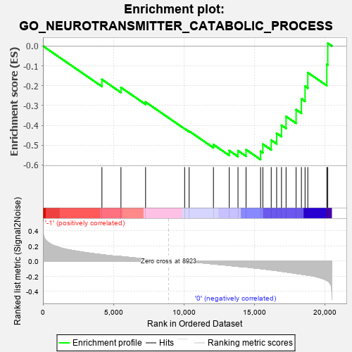
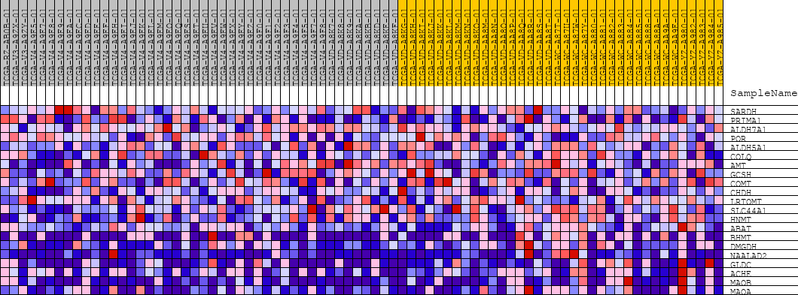
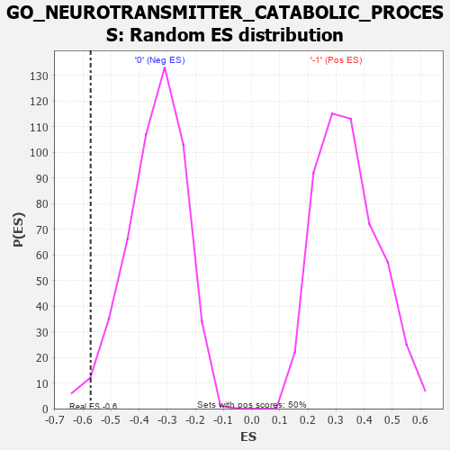

| | | Dataset | GSEAExpression.phenotype_uvm.cls#-1_versus_0 |
| Phenotype | phenotype_uvm.cls#-1_versus_0 |
| Upregulated in class | 0 |
| GeneSet | GO_NEUROTRANSMITTER_CATABOLIC_PROCESS |
| Enrichment Score (ES) | -0.57279325 |
| Normalized Enrichment Score (NES) | -1.6693244 |
| Nominal p-value | 0.018108651 |
| FDR q-value | 1.0 |
| FWER p-Value | 0.984 |
Table: GSEA Results Summary

Fig 1: Enrichment plot: GO_NEUROTRANSMITTER_CATABOLIC_PROCESS
Profile of the Running ES Score & Positions of GeneSet Members on the Rank Ordered List
| PROBE | DESCRIPTION
(from dataset) | GENE SYMBOL | GENE_TITLE | RANK IN GENE LIST | RANK METRIC SCORE | RUNNING ES | CORE ENRICHMENT | | 1 | SARDH | na | | | 4188 | 0.085 | -0.1686 | No |
| 2 | PRIMA1 | na | | | 5540 | 0.060 | -0.2091 | No |
| 3 | ALDH7A1 | na | | | 7288 | 0.028 | -0.2825 | No |
| 4 | POR | na | | | 10061 | -0.002 | -0.4168 | No |
| 5 | ALDH5A1 | na | | | 10380 | -0.008 | -0.4290 | No |
| 6 | COLQ | na | | | 12105 | -0.038 | -0.4970 | No |
| 7 | AMT | na | | | 13228 | -0.058 | -0.5271 | No |
| 8 | GCSH | na | | | 13849 | -0.070 | -0.5278 | No |
| 9 | COMT | na | | | 14423 | -0.079 | -0.5225 | No |
| 10 | CHDH | na | | | 15454 | -0.100 | -0.5306 | Yes |
| 11 | LRTOMT | na | | | 15614 | -0.104 | -0.4948 | Yes |
| 12 | SLC44A1 | na | | | 16208 | -0.117 | -0.4744 | Yes |
| 13 | HNMT | na | | | 16594 | -0.126 | -0.4400 | Yes |
| 14 | ABAT | na | | | 16938 | -0.135 | -0.3999 | Yes |
| 15 | BHMT | na | | | 17262 | -0.144 | -0.3549 | Yes |
| 16 | DMGDH | na | | | 17975 | -0.164 | -0.3209 | Yes |
| 17 | NAALAD2 | na | | | 18351 | -0.174 | -0.2661 | Yes |
| 18 | GLDC | na | | | 18611 | -0.180 | -0.2029 | Yes |
| 19 | ACHE | na | | | 18807 | -0.186 | -0.1342 | Yes |
| 20 | MAOB | na | | | 20155 | -0.254 | -0.0931 | Yes |
| 21 | MAOA | na | | | 20223 | -0.263 | 0.0144 | Yes |
Table: GSEA details [plain text format]

Fig 2: GO_NEUROTRANSMITTER_CATABOLIC_PROCESS
Blue-Pink O' Gram in the Space of the Analyzed GeneSet

Fig 3: GO_NEUROTRANSMITTER_CATABOLIC_PROCESS: Random ES distribution
Gene set null distribution of ES for GO_NEUROTRANSMITTER_CATABOLIC_PROCESS